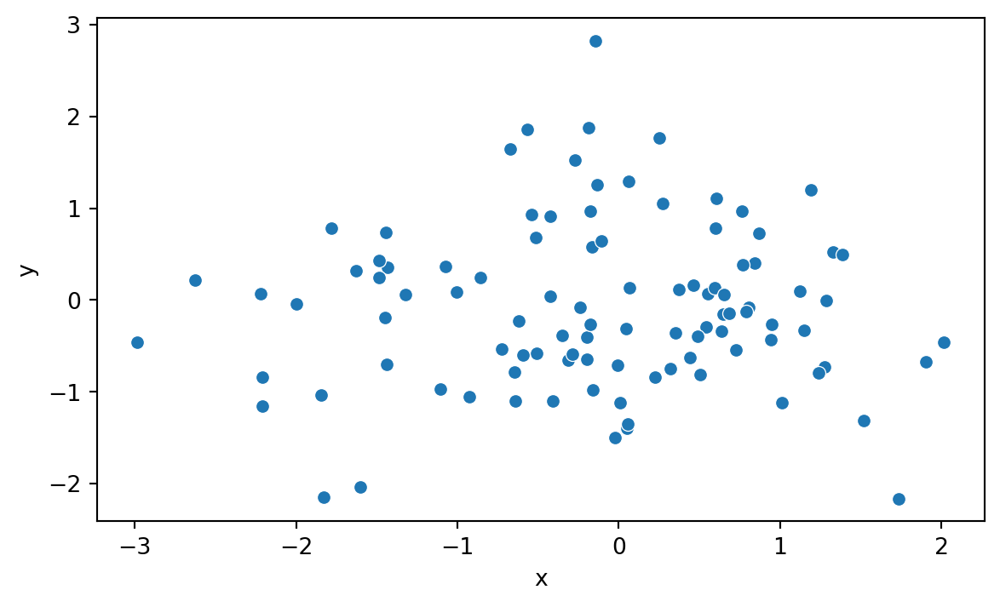
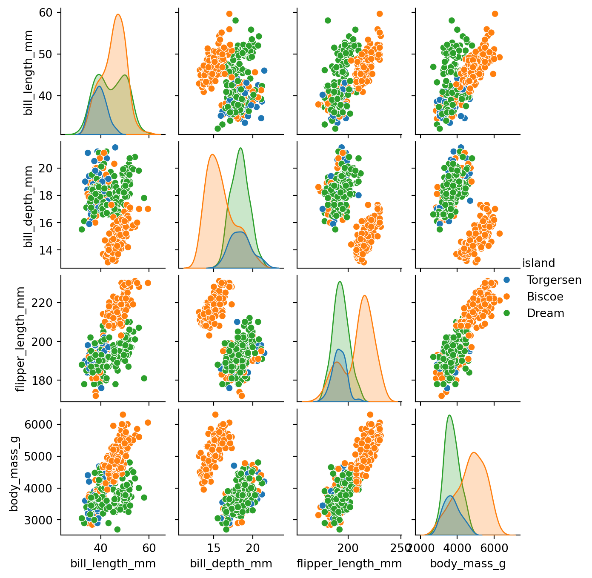
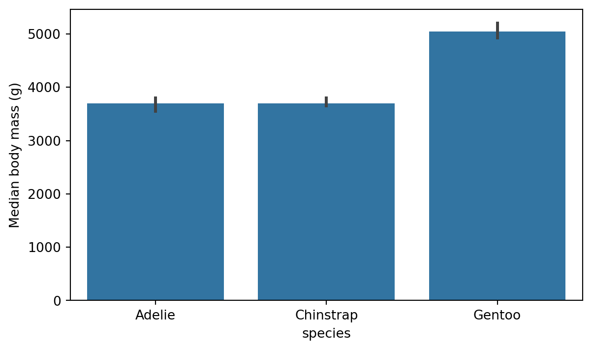
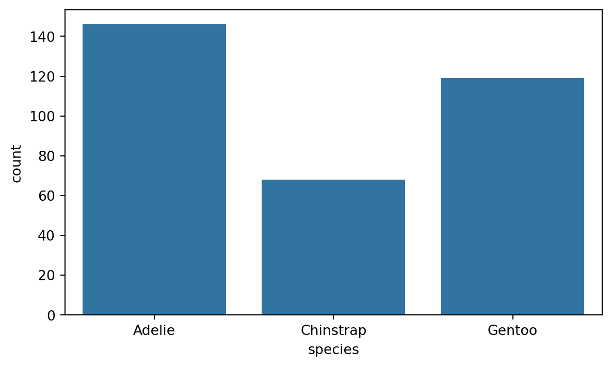
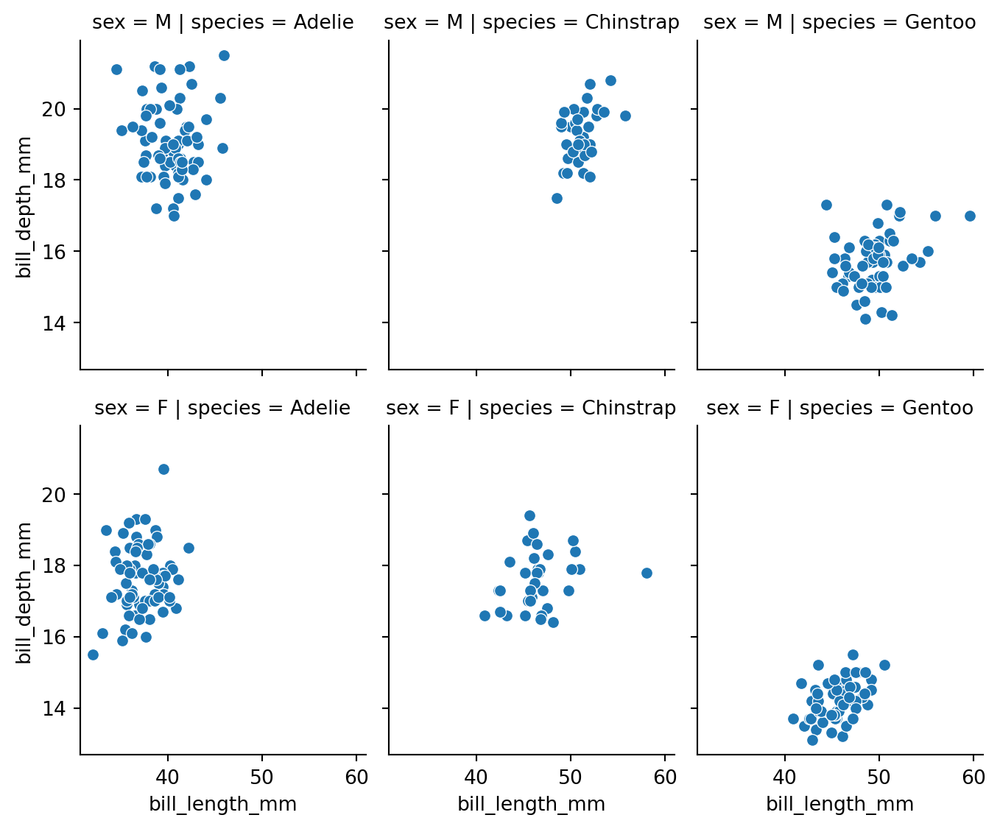
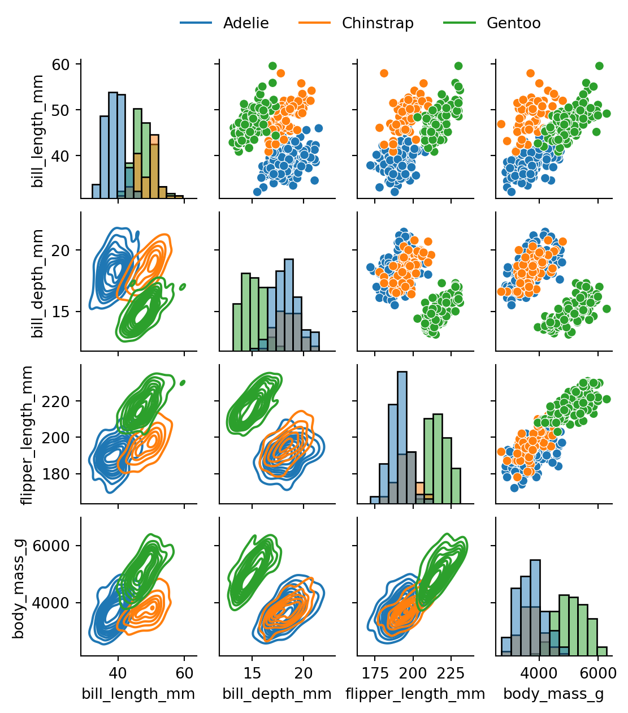
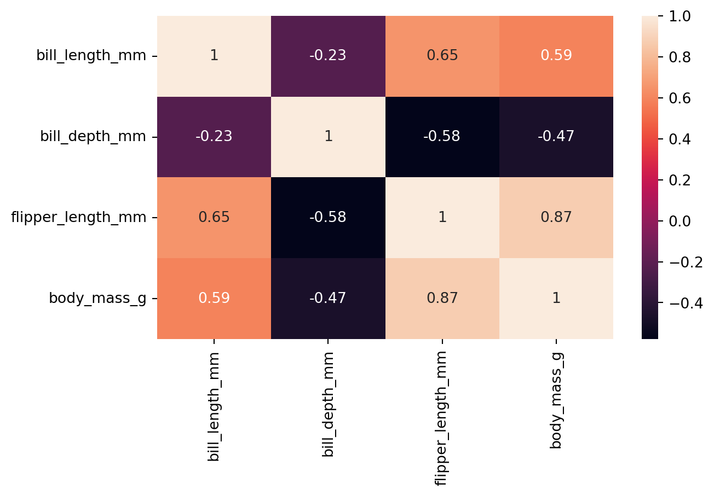
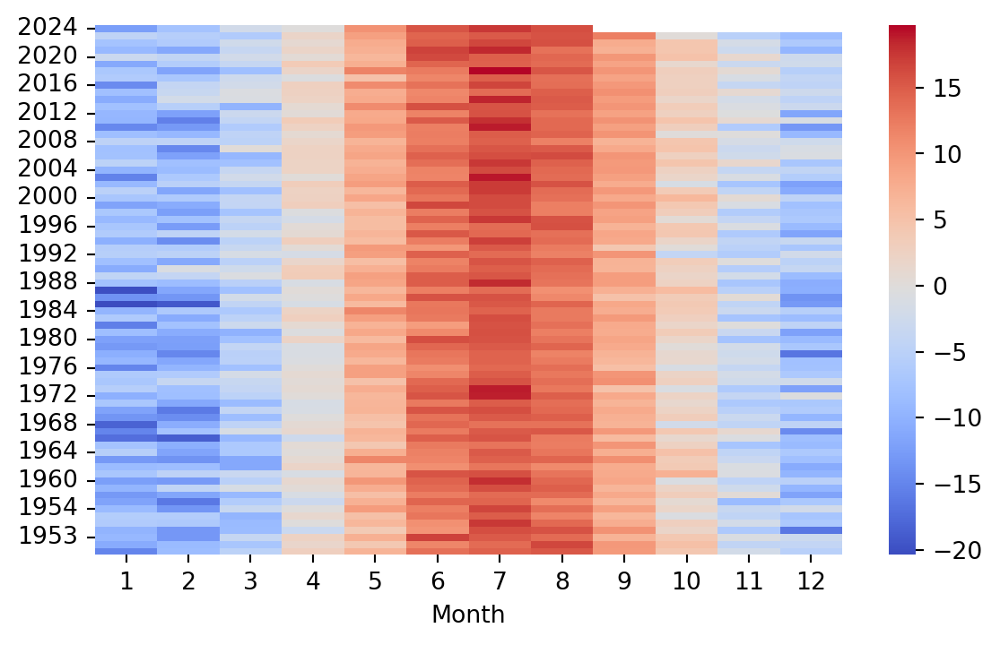
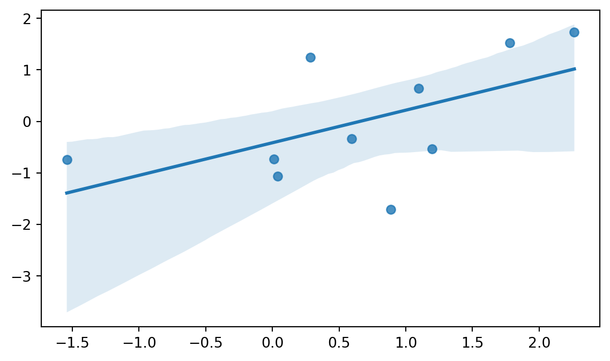
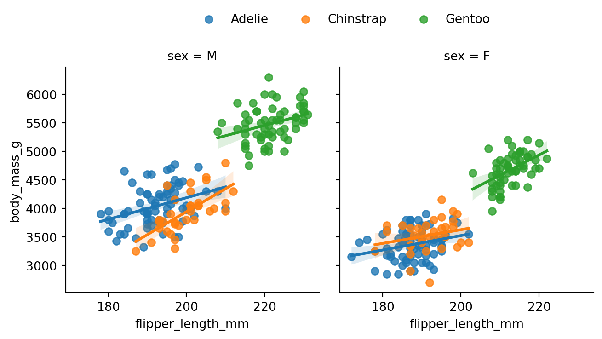

import seaborn as sns
import numpy as np
import pandas as pd8 Seaborn for data visualisation
Seaborn is a Python data visualisation library based on Matplotlib. Seaborn makes it easy to create attractive and well-laid-out plots. Seaborn also plays nicely with Pandas data structures, which is important for data science related visualizations. We can install Seaborn easily using pip or conda:
# installation using pip
pip install seaborn8.1 Getting started
Let’s start by creating a simple scatter plot using Seaborn. We start by importing Seaborn for the visualizations and Numpy and Pandas for generating and handling the data.
Next, we generate some random data and plot it using Seaborn (Figure 8.1).
x = np.random.normal(size=100)
y = np.random.normal(size=100)
df = pd.DataFrame({'x': x, 'y': y})
sns.scatterplot(x='x', y='y', data=df)

We can see right away that Seaborn’s syntax differs somewhat from the one used by Matplotlib.
Seaborn Documentation
The Seaborn website contains something called the API reference, which is a comprehensive guide to the functions and classes in Seaborn. It is a great resource to learn more about the details regarding Seaborn and how to use it effectively. You can find it at https://seaborn.pydata.org/api.html.
8.2 Evaluating distributions
Seaborn offers many convenient plotting functions for evaluating distributions. Let’s explore the penguins dataset that comes with Seaborn. The penguins dataset contains data on the size and species of penguins collected from different islands in the Palmer Archipelago, Antarctica. We can load the dataset using the following code:
penguins = sns.load_dataset('penguins').dropna()
penguins.head()| species | island | bill_length_mm | bill_depth_mm | flipper_length_mm | body_mass_g | sex | |
|---|---|---|---|---|---|---|---|
| 0 | Adelie | Torgersen | 39.1 | 18.7 | 181.0 | 3750.0 | Male |
| 1 | Adelie | Torgersen | 39.5 | 17.4 | 186.0 | 3800.0 | Female |
| 2 | Adelie | Torgersen | 40.3 | 18.0 | 195.0 | 3250.0 | Female |
| 4 | Adelie | Torgersen | 36.7 | 19.3 | 193.0 | 3450.0 | Female |
| 5 | Adelie | Torgersen | 39.3 | 20.6 | 190.0 | 3650.0 | Male |
Table 8.2 shows a summary of the dataset.
penguins.describe()| bill_length_mm | bill_depth_mm | flipper_length_mm | body_mass_g | |
|---|---|---|---|---|
| count | 333.000000 | 333.000000 | 333.000000 | 333.000000 |
| mean | 43.992793 | 17.164865 | 200.966967 | 4207.057057 |
| std | 5.468668 | 1.969235 | 14.015765 | 805.215802 |
| min | 32.100000 | 13.100000 | 172.000000 | 2700.000000 |
| 25% | 39.500000 | 15.600000 | 190.000000 | 3550.000000 |
| 50% | 44.500000 | 17.300000 | 197.000000 | 4050.000000 |
| 75% | 48.600000 | 18.700000 | 213.000000 | 4775.000000 |
| max | 59.600000 | 21.500000 | 231.000000 | 6300.000000 |
8.2.1 Pairplot
The pairplot() function creates a grid of scatterplots for all pairs of numerical columns in a DataFrame. Additionally, it show’s an estimate of the distribution of each column along the diagonal. It is simple yet effective way to get an overview of your data, provided the data doesn’t entail a huge number of numeric columns. Figure 8.2 shows an example for the penguins dataset.
pen_plt = sns.pairplot(penguins, hue='island')
pen_plt.fig.set_size_inches(7,7)

Above we used the hue parameter to color the points based on the island where the penguins were observed. This makes it easier to see if there are any differences between the islands. We can set the hue parameter to any categorical column in the dataset.
8.2.2 Displot & Histogram
The displot() function creates a histogram and a kernel density estimate of the data. It is a convenient way to evaluate the distribution of a single variable. Figure 8.3 shows an example for the penguins dataset.
sns.displot(penguins['flipper_length_mm'], kde=True)If we are simply looking to create a histogram, we can use the histplot() function. Figure 8.4 shows an example for the penguins dataset.
sns.histplot(penguins['flipper_length_mm'], bins=20)Here we used the bins parameter to set the number of bins in the histogram. There are many other parameters that can be used to customize the plot, including but not limited to:
binwidth: Width of each binfill: Whether to fill the bars with color.
8.2.3 Boxplot
Boxplot is convenient for visualizing the distribution of a numerical variable across different categories. The boxplot() function creates a boxplot of the data. Figure 8.5 shows an example for the penguins dataset.
sns.boxplot(x='species', y='flipper_length_mm', data=penguins)
8.2.4 Jointplot
The jointplot() function creates a scatter plot of two numerical variables along with the histograms of each variable. It is a convenient way to visualize the relationship between two variables. Figure 8.6 shows an example with the flipper length and body mass.
sns.jointplot(x='flipper_length_mm', y='body_mass_g',
data=penguins, kind='reg')The kind parameter is very useful, as it allows us to choose the type of plot to display in the jointplot. For example, if we have a lot of points we can use kind='hex' to create a hexbin plot. Figure 8.7 shows an example.
sns.jointplot(x='flipper_length_mm', y='body_mass_g',
data=penguins, kind='hex')8.3 Comparing groups
A common task in data analysis is to compare different groups within data. For example, in the penguins dataset we might want to compare the body mass of the different species. One way to do this is to create a barplot, as we have done in Figure 8.8.
sns.barplot(x='species', y='body_mass_g', data=penguins)By default, the barplot shows the average value of the y variable for each category in the x variable. The barplot function has a parameter for adjusting which estimator is used in comparing the group. We change the estimator to e.g. median quite easily with the help of numpy as shown in Figure 8.9.
import matplotlib.pyplot as plt
plot = sns.barplot(x='species', y='body_mass_g', data=penguins, estimator=np.median)
# re-label y-axis
plot.set_ylabel('Median body mass (g)')
plt.show()

8.3.1 Countplot
If the bars in the barplot are used for counting the number of observations, we can use the countplot() function in Seaborn. Figure 8.10 shows an example of this on the number of different species in the penguins dataset. This is a great way of assessing if the dataset is balanced or not.
sns.countplot(x='species', data=penguins)

8.3.2 Digging deeper with the hue parameter
As we saw above, the countplot and barplot functions are effective tools for comparing groups within a dataset. The hue parameter allows us to add an extra layer of granularity to the plot. For example, we can use the hue parameter to compare the bill lenght of the different species of penguins and see the effect of sex of the penguin. Figure 8.11 shows an example of this.
sns.barplot(x='species', y='bill_length_mm', hue='sex', data=penguins)Using the hue parameter is very useful also with plot types like boxplot and violinplot, which display distributions. Figure 8.12 shows an example of a boxplot with the hue parameter.
sns.boxplot(x='species', y='flipper_length_mm', hue='sex', data=penguins)8.4 Faceting
In the previous section we saw how to utilize the hue parameter in separating data based on a grouping variable. Another useful technique for visualizing grouped data is faceting. We can use the FacetGrid class to create a separate histogram for each species in the penguins dataset. Figure 8.13 shows an example of this.
g = sns.FacetGrid(penguins, col='species')
g.map(sns.histplot, 'flipper_length_mm')
g.fig.set_size_inches(w=7, h=3)species column as the col parameter value, separate plots for each species are created into their respective columns.
We can also use the row parameter to facet the plots into rows. This is especially useful when we have two categorical columns we want to group by. Figure 8.14 shows data grouped by the species and sex variables.
# modify the sex column to show F for Female and M for Male
penguins['sex'] = penguins['sex'].apply(lambda x: 'F' if x == 'Female' else 'M')
g = sns.FacetGrid(penguins, row='sex', col='species')
g.map(sns.scatterplot, 'bill_length_mm', 'bill_depth_mm')
g.figure.set_size_inches(w=7, h=6)

8.4.1 More complex Grids
FacetGrid is not the only way to create a grid of plots in Seaborn. The pairplot function we saw earlier is another example of a grid of plots. In fact pairplot is just a specialized version of a more general function called PairGrid. We can use PairGrid to create a grid of plots for any pair of variables in the dataset, and we can also specify which type of plots we want on different parts of the grid. Figure 8.15 shows an example of this.
g = sns.PairGrid(penguins, hue='species')
# set the upper triangle to scatterplot
g.map_upper(sns.scatterplot)
# set the lower triangle to kdeplot
g.map_lower(sns.kdeplot)
# set the diagonal to histplot
g.map_diag(sns.histplot)
g.add_legend()
sns.move_legend(g, "lower center",
bbox_to_anchor=(.5, 1), ncol=3, title=None, frameon=False
)
# set figure size
g.figure.set_size_inches(w=6, h=6)

8.5 Visualizing Correlation
Correlation can be roughly described as a measure of the strength and direction of a linear relationship between two numerical variables. For example, for the numeric columns in the penguins dataset, we can calculate the correlation matrix using the corr() function. Table 8.3 shows the correlation matrix for the penguins dataset.
pen_corr = penguins.corr(numeric_only=True)
pen_corr| bill_length_mm | bill_depth_mm | flipper_length_mm | body_mass_g | |
|---|---|---|---|---|
| bill_length_mm | 1.000000 | -0.228626 | 0.653096 | 0.589451 |
| bill_depth_mm | -0.228626 | 1.000000 | -0.577792 | -0.472016 |
| flipper_length_mm | 0.653096 | -0.577792 | 1.000000 | 0.872979 |
| body_mass_g | 0.589451 | -0.472016 | 0.872979 | 1.000000 |
Once we have our data in this rectangular form, we can use the heatmap() function, which offers a convenient way to visualize the correlation. The heatmap() function creates a color-coded matrix that shows the correlation between each pair of variables. Figure 8.16 shows an example of this for the correlation data we created above.
sns.heatmap(pen_corr, annot=True)

The annot parameter is used to display the numeric correlation values in the heatmap. Moreover, cmap parameter can be used to change the color map of the heatmap.
8.5.1 Heatmap for temporal data
Heatmaps can also be used to visualize temporal data. Table 8.4 shows monthly weather data from the website Our World in Data.
weather = pd.read_csv('data/monthly-average-surface-temperatures-by-year.csv')
weather| Entity | Code | Year | 2024 | 2023 | 2022 | 2021 | 2020 | 2019 | 2018 | ... | 1959 | 1958 | 1956 | 1954 | 1952 | 1957 | 1955 | 1953 | 1951 | 1950 | |
|---|---|---|---|---|---|---|---|---|---|---|---|---|---|---|---|---|---|---|---|---|---|
| 0 | Finland | FIN | 1 | -12.356432 | -4.536643 | -7.592226 | -9.110156 | -3.112542 | -11.025353 | -6.895465 | ... | -9.696966 | -12.954665 | -11.878848 | -8.946227 | -5.870114 | -6.206512 | -9.807618 | -9.158957 | -10.899360 | -14.994019 |
| 1 | Finland | FIN | 2 | -7.631946 | -5.592857 | -6.273704 | -11.295887 | -4.104153 | -5.959055 | -11.653291 | ... | -4.385164 | -11.575406 | -16.195097 | -13.229277 | -5.858663 | -6.452776 | -13.163642 | -13.099696 | -8.866541 | -8.616582 |
| 2 | Finland | FIN | 3 | -2.152660 | -6.260747 | -2.362002 | -3.575844 | -2.093242 | -3.754119 | -8.216735 | ... | -1.374446 | -9.041509 | -6.101201 | -3.394979 | -9.736150 | -8.902771 | -8.678738 | -3.652206 | -7.219227 | -4.774562 |
| 3 | Finland | FIN | 4 | -0.105814 | 1.859364 | 0.963580 | 1.959561 | 0.592504 | 3.668244 | 1.857609 | ... | 0.429239 | -1.223686 | -2.926554 | -0.158412 | 1.350001 | -0.055782 | -3.018537 | 2.357863 | 1.580248 | 2.926893 |
| 4 | Finland | FIN | 5 | 10.342938 | 9.054110 | 7.681894 | 7.209668 | 6.447229 | 7.416959 | 11.818787 | ... | 7.576959 | 5.305153 | 7.060782 | 9.387682 | 5.249408 | 6.424380 | 3.803955 | 7.328690 | 4.187241 | 6.869668 |
| 5 | Finland | FIN | 6 | 15.629230 | 14.390386 | 14.857914 | 16.784351 | 16.298048 | 14.332166 | 12.409929 | ... | 13.862224 | 12.240686 | 14.262403 | 12.196805 | 12.959100 | 10.485080 | 10.143443 | 16.841997 | 11.469393 | 13.351920 |
| 6 | Finland | FIN | 7 | 17.379380 | 15.121183 | 16.573692 | 18.357800 | 14.814271 | 14.564145 | 19.720356 | ... | 16.012850 | 13.836065 | 14.284949 | 16.679026 | 14.955886 | 17.375101 | 16.000717 | 15.119339 | 13.776219 | 14.620484 |
| 7 | Finland | FIN | 8 | 15.999804 | 15.713537 | 15.900022 | 13.261284 | 14.121853 | 13.773454 | 15.358797 | ... | 14.763309 | 13.833643 | 11.212431 | 13.601360 | 11.714494 | 13.959742 | 15.751595 | 13.766891 | 16.507440 | 15.331268 |
| 8 | Finland | FIN | 9 | NaN | 12.078142 | 7.694565 | 7.075720 | 9.989091 | 8.631719 | 10.090892 | ... | 6.644055 | 8.106494 | 6.433380 | 9.015210 | 6.523679 | 7.595360 | 10.376423 | 6.875361 | 9.839784 | 9.541843 |
| 9 | Finland | FIN | 10 | NaN | 0.258406 | 4.493286 | 4.510300 | 4.983604 | 1.240841 | 3.102760 | ... | 2.086031 | 3.264047 | 0.802558 | 1.842529 | -0.712148 | 2.896886 | 1.894943 | 4.152942 | 5.239940 | 4.349140 |
| 10 | Finland | FIN | 11 | NaN | -5.321711 | -1.655154 | -2.792642 | 1.341732 | -3.120430 | 0.699558 | ... | -2.421227 | 0.332971 | -8.738729 | -3.450766 | -4.315333 | -2.058513 | -6.467130 | -0.935875 | -4.115920 | -2.016795 |
| 11 | Finland | FIN | 12 | NaN | -8.636971 | -6.510187 | -9.504569 | -2.615182 | -2.354235 | -5.373116 | ... | -9.508020 | -11.801905 | -6.794479 | -2.086087 | -7.242684 | -6.743253 | -16.398590 | -2.729617 | -4.081283 | -5.246907 |
12 rows × 78 columns
We can see that the dataset contains the average temperature for each month in Finland from 1950 to 2024. We can use the heatmap() function to visualize this data. When we look at the data in Table 8.4 we notice that the months are actually listed under the Year column, while the years themselves are listed with numeric column names. First thing to do, is to move the Year column as the index and remove the Entity and Code columns. Finally, we shall transpose the data, so that the months will be displayed on the x-axis of the resulting heatmap (Figure 8.17).
weather = weather.set_index('Year').drop(columns=['Entity', 'Code'])
# rename index to month
weather.index.name = 'Month'
# transpose the data
weather = weather.T
sns.heatmap(weather, cmap='coolwarm')

8.6 Visualizing Regression
Seaborn is designed for statistical data visualization. With this in mind, it is not that surprizing to learn that Seaborn offers many convenient ways to visualize regression models. The lmplot() and the regplot() functions are the two function offered by Seaborn to visualize a linear fit. You can refer to the Seaborn documentation about the differences between the two functions, but briefly the lmplot() function requires the data argument to be passed, whereas regplot() can be used for plotting e.g. two numpy arrays. Figure 8.18 shows an example of the lmplot() function with the penguins dataset, and Figure 8.19 shows an example of the regplot() function with two numpy arrays.
sns.lmplot(x='flipper_length_mm', y='body_mass_g', data=penguins)
# regplot example for numpy arrays
sns.regplot(x=np.random.normal(size=10), y=np.random.normal(size=10))

So, as we can see, both functions offer a way to visualize the linear relationship between two variables.
We can utilize similar techniques we saw earlier with the lmplot() and regplot() functions. For example, we can use the hue parameter to color the points based on the species of the penguin, and facet according to sex (Figure 8.20).
g = sns.lmplot(data=penguins, x='flipper_length_mm', y='body_mass_g',
hue='species', col='sex',
aspect=1, height=3.5
)
sns.move_legend(g, "lower center",
bbox_to_anchor=(.5, 1), ncol=3, title=None, frameon=False
)
